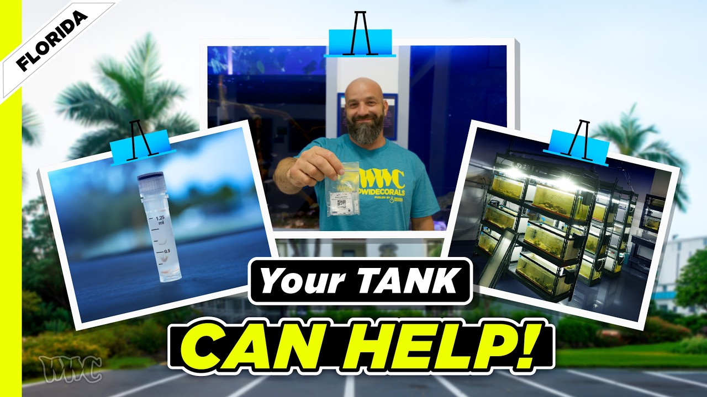

Friday, August 21, 2026 · 13 items · back issues
Howdy, it's Isaac again.
Happy Friday, reefing family, and welcome back to Weekly Dive.
Here are the biggest things worth knowing:
- Jamie's Dinoflagellate Journey
- Our friends at @noaa.gov are forecasting that the 2026/2027 #ElNiño could be among the strongest on record
- How Your Reef Tank Can Help Marine Science | Amphipod Microbiome Research with Dr. Nathaniel Curtis
- Researchers studied the frequency and impacts of bomb #fishing, an illegal fishing practice, in the Spermonde…
- Plus 9 more across wild reefs, livestock & corals, husbandry & science
Let's dive into the news touching our hobby…
Community3
-
Jamie's Dinoflagellate Journey
Why this thread matters? It is important to see how fellow reef keepers nurse their tanks through a dinoflagellate outbreak. It's not an easy journey and Jamie's latest update reports dinos have been gone for about two months.
Reef2Reef · Aug 19 · reef2reef.com
-
Can You Have Too Much Data? The Truth About Reef Tank Water Testing & pH | Mr. Saltwater Tank
Video on water-testing strategy for reef tanks examines margin of error, parameter priorities, and when obsessive logging does harm. Practical guidance on which measurements actually matter for coral husbandry.
10 min SaltwaterAquarium.com · SaltwaterAquarium · Aug 20 · youtube.com
-
Rappin’ With ReefBum: Guests Richard Ross, Joe Yaiullo & Alex Grah – Water Flow in a Reef Tank
ReefBum podcast episode features Richard Ross, Joe Yaiullo, and Alex Grah discussing water flow in reef tanks. Water movement is fundamental to reef tank function and coral health, making expert guidance on optimization directly applicable.
Reefs.com · ReefBum · Aug 18 · reefs.com
Husbandry & Science1
-
Coral acclimatization to novel, co-varying stressors is associated with fitness trade-offs
Research on Siderastrea siderea and Porites corals shows acclimatization to combined stressors involves fitness trade-offs. Understanding how corals adapt physiologically to multiple pressures informs realistic husbandry expectations and species selection for challenging conditions.
Coral Reefs · Sarah L. Solomon et al. · Aug 18 · doi.org
Livestock & Corals3
-
The species - Hippocampus amandavincentae - was found by examining heaps of bycatch
Scientists identified a new seahorse species, *Hippocampus amandavincentae*, overlooked in bycatch for over a century. Seahorses are stocked in marine aquaria; new species descriptions matter for collection and identification.
UBC Oceans — Bluesky · Aug 19 · bsky.app
-
Marine biologist @amandavincent.bsky.social once examined fish hauled ashore by trawlers
New seahorse species *Hippocampus amandavincentae* named after marine biologist Amanda Vincent, discovered in trawl bycatch. Seahorse taxonomy is relevant to the marine ornamental trade reef keepers rely on.
UBC Oceans — Bluesky · Aug 19 · bsky.app
-
#ThrowbackThursday This week’s spotlight linked fisher interviews and logbooks to show that seahorse catch…
Historical fisher data reveals 93% decline in seahorse catch despite stable modern logs, showing stock depletion. Catch trends directly inform availability and sustainability of seahorses in the hobby trade.
Project Seahorse — Bluesky · Aug 20 · bsky.app
Wild Reefs5
-
Our friends at @noaa.gov are forecasting that the 2026/2027 #ElNiño could be among the strongest on record
NOAA forecasts 2026–27 El Niño may rank among the strongest on record. Severe El Niño events trigger coral bleaching, nutrient upwelling, and wild-stock stress; this is a critical outlook for reef systems.
Scripps Institution of Oceanography — Bluesky · Aug 20 · bsky.app
-
Researchers studied the frequency and impacts of bomb #fishing, an illegal fishing practice, in the Spermonde…
Researchers studied blast fishing's frequency and impact in the Spermonde Archipelago. Destructive fishing methods directly damage reef ecosystems and drive conservation concerns affecting collection.
UBC Oceans — Bluesky · Aug 19 · bsky.app
-
📑 #NewStudy by Hellmrich et al. used underwater video to study how communities of fishes change across…
Video study of fish community composition across depth and habitat on mesophotic coral reefs. Understanding deep-reef fish ecology informs knowledge of reef systems and species life history.
Australian Society for Fish Biology — Bluesky · Aug 20 · bsky.app
-
Advancing knowledge on biodiversity-driven ecological connectivity at sea and across the land–sea interface: challenges and future directions
Marine Functional Connectivity science examines how organisms and energy move across ocean systems and scales. Understanding these linkages informs reef conservation and larval connectivity that aquarists depend on for wild populations.
Frontiers in Marine Science — Journal · Audrey M. Darnaude · Aug 21 · frontiersin.org
-
Five new marine protected areas came into effect in Aotearoa New Zealand in July, with a 6th is expected to…
New Zealand established five marine protected areas with Māori co-management, banning extractive activities. Reserve networks shape wild-stock sustainability and trade availability for aquacultured species.
UBC Oceans — Bluesky · Aug 20 · bsky.app
Resource

How Your Reef Tank Can Help Marine Science | Amphipod Microbiome Research with Dr. Nathaniel CurtisNSF-funded researcher seeks reef-hobbyist samples to study amphipod microbiomes and their variation across tank conditions. Hobby aquarists can contribute directly to invertebrate microbiome research with their own systems.
42 min World Wide Corals · Aug 20 · youtube.com